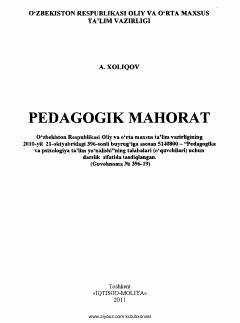

PMO'qituvchi kasbiy mahoratini rivojlantirishga bag'ishlangan to'liq darslik.
Ushbu darslik pedagogik mahorat fanining nazariy, metodologik va amaliy asoslarini yoritadi. Kitobda o'qituvchining kommunikativ qobiliyati, pedagogik muloqot, nutq texnikasi va kasbiy etika kabi mavzular keng ko'lamda tahlil qilingan. Darslik pedagogika va psixologiya yo'nalishi talabalari hamda amaliyotdagi o'qituvchilar uchun mo'ljallangan.